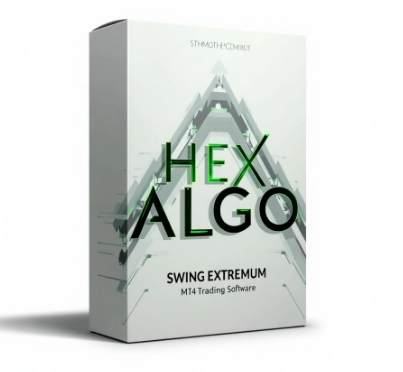

Forex HEX Algo Strategy For MetaTrader 4 Platform
Product profile · Marketplace data 2026-10-09 · Sales-page research 2026-10-09 · Categories: Business & Investment, Software

Marketplace record
| Product type | Software |
|---|---|
| Price | $41.39 (Single payment) |
| Affiliate commission | 60% |
| Refund window | Per the vendor's sales page — check the official page before buying |
| Vendor | forexobroker (listed since 2025-11-04) |
| Marketplace stats* | Cart conversion — · cancel rate — · affiliate earnings/sale $24.83 |
* Vendor-side marketplace statistics reported by Digistore24; they depend on traffic quality and are not a forecast.
Vendor's marketplace description
What is HEX ALGO? HEX ALGO is a cutting-edge MetaTrader 4 indicator engineered to detect swing highs and lows (“extremums”) with exceptional precision. This advanced tool empowers traders to confidently spot optimal BUY and SELL zones before the market reverses, guiding entries and exits on forex, indices, commodities, and crypto. Using proprietary price action algorithms and adaptive filters, HEX…
From the vendor's sales page
Page title: Advanced Swing Extremum Detection System
Headline
New Forex HEX Algo Advanced Swing Extremum Detection System for MT4 Platform
Advanced Swing Extremum Detection System
Gallery Trade Examples
Section headlines
- Buy Now For Only 37$
Guarantee language found: “60” — always confirm the current terms on the official page before relying on it.
Opening copy
HEX ALGO is a state-of-the-art MetaTrader 4 indicator built to uncover precise price extremums within market swings. Engineered for traders who demand accuracy, timing, and consistency, HEX ALGO provides a powerful edge by pinpointing optimal BUY and SELL zones before major price reversals unfold.
By combining advanced price action algorithms with adaptive filtering, HEX ALGO dynamically tracks swing highs and lows to detect exhaustion points in real time. The result? Clear, actionable signals that keep you one step ahead of the market.
Whether you’re a scalper, day trader, or swing trader, HEX ALGO empowers you to spot extremum points early, and make more informed trading decisions. The indicator’s real-time alerts and visual clarity ensure that every signal is easy to interpret and immediately actionable—keeping you one step ahead of the crowd and in sync with the true rhythm of the market.
Research method: raw HTML fetch · 389 words on page · quality: medium · researched 2026-10-09. Full research file (MD) ↗
Where to check it out
Read the vendor's full sales page (current price, guarantee terms and bonuses are listed there):
View official sales page
That link is an affiliate link — if you buy through it we earn a commission from the vendor at no extra cost to you.